20 Exploratory Data Analysis: Visualization
We are now entering the last step of what we would want to do with a dataset before starting modeling using statistics or Machine Learning. We have seen manipulations and operations that prepare datasets into tidy (or normal form), compute summaries, and join tables to obtain organized, clean data tables that contain the observational units, or entities, we want to model statistically.
At this point, we want to perform Exploratory Data Analysis to better understand the data at hand, and help us make decisions about appropriate statistical or Machine Learning methods, or data transformations that may be helpful to do. Moreover, there are many instances where statistical data modeling is not required to tell a clear and convincing story with data. Many times an effective visualization can lead to convincing conclusions.
20.0.1 EDA (Exploratory Data Analysis)
The goal of EDA is to perform an initial exploration of attributes/variables across entities/observations. In this section, we will concentrate on exploration of single or pairs of variables. Later on in the course we will see dimensionality reduction methods that are useful in exploration of more than two variables at a time.
We will concentrate on computing summary statistics, and how to interpret them in order to understand properties of variables. To go along with that, we will consider some data transformations we can apply to change properties of variables to help in visualization or modeling. But first, we will discuss how to use visualization for exploratory data analysis.
Ultimately, the purpose of EDA is to spot problems in data (as part of data wrangling) and understand variable properties like:
- central trends (mean)
- spread (variance)
- skew
- outliers
This will help us think of possible modeling strategies (e.g., probability distributions)
We also want to use EDA to understand relationships between pairs of variables, e.g. their correlation or covariance.
20.1 Visualization of single variables
Let’s begin by using R’s basic graphics capabilities which are great for creating quick plots especially for EDA. We will then see ggplot2 that requires you to be a bit more thoughtful on data exploration that can lead to good ideas about analysis and modeling.
Let’s start with a very simple visualization of values of the dep_delay attribute in the flights dataset.
library(nycflights13)
flights %>%
sample_frac(.25) %>%
rowid_to_column() %>%
ggplot(aes(x=rowid, y=dep_delay)) +
geom_point() 
That’s not particularly informative since there is no structure to this plot. Let’s sort the values in the plot and change the graphical representation to make easier to see.
flights %>%
sample_frac(.25) %>%
arrange(dep_delay) %>%
rowid_to_column() %>%
ggplot(aes(x=rowid, y=dep_delay)) +
geom_point() 
What can we make of that plot now? Start thinking of central tendency, spread and skew as you look at that plot.
Let’s now create a graphical summary of that variable to incorporate observations made from this initial plot. Let’s start with a histogram: it divides the range of the dep_delay attribute into equal-sized bins, then plots the number of observations within each bin. What additional information does this new visualization give us about this variable?
flights %>%
ggplot(aes(x=dep_delay)) +
geom_histogram() ## `stat_bin()` using `bins = 30`. Pick better value with `binwidth`.## Warning: Removed 8255 rows containing non-finite values (stat_bin).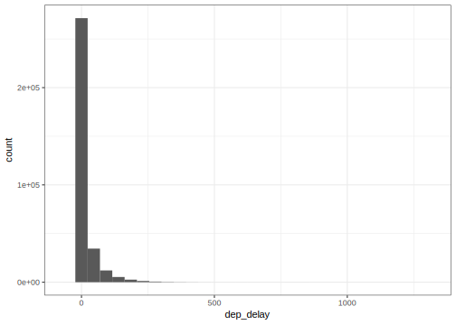
The nclass parameter controls the number of bins into which the dep_delay range is divided. Try changing that parameter and see what happens.
Now, we can (conceptually) make the bins as small as possible and get a smooth curve that describes the distribution of values of the dep_delay variable. We call this a density plot:
flights %>%
ggplot(aes(x=dep_delay)) +
geom_density()## Warning: Removed 8255 rows containing non-finite values (stat_density).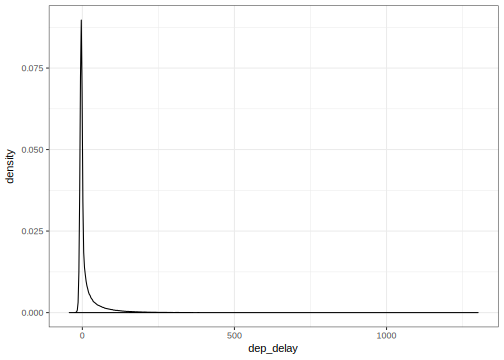
Now, one more very useful way of succintly graphically summarizing the distribution of a variable is using a boxplot.
flights %>%
ggplot(aes(x='',y=dep_delay)) +
geom_boxplot()## Warning: Removed 8255 rows containing non-finite values (stat_boxplot).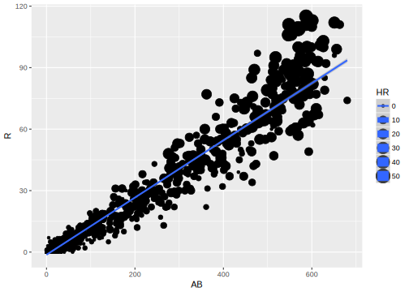
That’s not very clear to see, so let’s do a transformation of this data to see this better:
flights %>%
mutate(min_delay=min(dep_delay, na.rm=TRUE)) %>%
mutate(log_dep_delay = log(dep_delay - min_delay)) %>%
ggplot(aes(x='', y=log_dep_delay)) +
geom_boxplot()## Warning: Removed 8256 rows containing non-finite values (stat_boxplot).
So what does this represent: (a) central tendency (using the median) is represented by the black line within the box, (b) spread (using inter-quartile range) is represented by the box and whiskers. (c) outliers (data that is unusually outside the spread of the data)
We will see more formal descriptions of these summary statistics in the next section, but you can see what we are trying to capture with them graphically.
20.1.1 Visualization of pairs of variables
Now we can start looking at the relationship between pairs of attributes. That is, how are each of the distributional properties we care about (central trend, spread and skew) of the values of an attribute changing based on the value of a different attribute. Suppose we want to see the relationship between dep_delay, a numeric variable, and origin, a categorical variable.
Previously, we saw use the group_by-summarize operations to compute attribute summaries based on the value of another attribute. We also called this conditioning. In visualization we can start thinking about conditioning as we saw before. Here is how we can see a plot of the distribution of departure delays conditioned on origin airport.
flights %>%
mutate(min_delay = min(dep_delay, na.rm=TRUE)) %>%
mutate(log_dep_delay = log(dep_delay - min_delay)) %>%
ggplot(aes(x=origin, y=log_dep_delay)) +
geom_boxplot()## Warning: Removed 8256 rows containing non-finite values (stat_boxplot).
For pairs of continuous variables, the most useful visualization is the scatter plot. This gives an idea of how one variable varies (in terms of central trend, variance and skew) conditioned on another variable.
flights %>%
sample_frac(.25) %>%
ggplot(aes(x=dep_delay, y=arr_delay)) +
geom_point()20.2 EDA with the grammar of graphics
While we have seen a basic repertoire of graphics it’s easier to proceed if we have a bit more formal way of thinking about graphics and plots. Here is where we will use the grammar of graphics implemented in R by the package ggplot2.
The central premise is to characterize the building pieces behind plots:
- The data that goes into a plot, works best when data is tidy
- The mapping between data and aesthetic attributes
- The geometric representation of these attributes
Let’s start with a simple example:
library(dplyr)
library(ggplot2)
library(Lahman)
batting <- tbl_df(Batting)
# scatter plot of at bats vs. runs for 2010
batting %>%
filter(yearID == "2010") %>%
ggplot(aes(x=AB, y=R)) +
geom_point()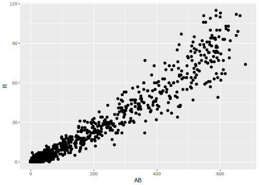
Data: Batting table filtering for year
Aesthetic attributes: - x-axis mapped to variables AB - y-axis mapped to variable R
Geometric Representation: points!
Now, you can cleanly distinguish the constituent parts of the plot. E.g., change the geometric representation
# scatter plot of at bats vs. runs for 2010
batting %>%
filter(yearID == "2010") %>%
ggplot(aes(x=AB, y=R, label=teamID)) +
geom_text() +
geom_point()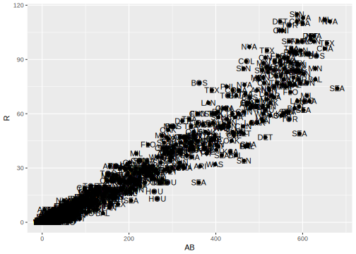
E.g., change the data.
# scatter plot of at bats vs. runs for 1995
batting %>%
filter(yearID == "1995") %>%
ggplot(aes(x=AB, y=R)) +
geom_point()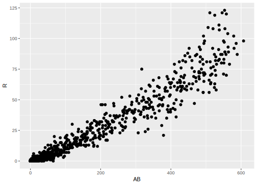
E.g., change the aesthetic.
# scatter plot of at bats vs. hits for 2010
batting %>%
filter(yearID == "2010") %>%
ggplot(aes(x=AB, y=H)) +
geom_point()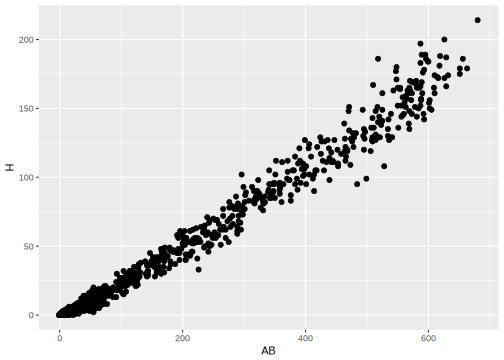
Let’s make a line plot
What do we change? (data, aesthetic or geometry?)
batting %>%
filter(yearID == "2010") %>%
sample_n(100) %>%
ggplot(aes(x=AB, y=H)) +
geom_line()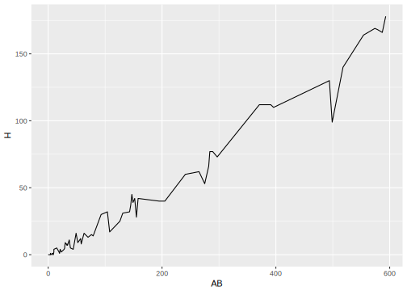
Let’s add a regression line
What do we add? (data, aesthetic or geometry?)
batting %>%
filter(yearID == "2010") %>%
ggplot(aes(x=AB, y=H)) +
geom_point() +
geom_smooth(method=lm)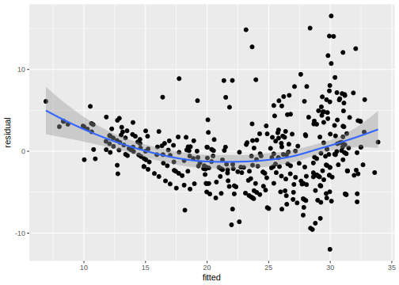
What can we see about central trend, variation and skew with this plot?
20.2.1 Other aesthetics
Using other aesthetics we can incorporate information from other variables.
Color: color by categorical variable
batting %>%
filter(yearID == "2010") %>%
ggplot(aes(x=AB, y=H, color=lgID)) +
geom_point() +
geom_smooth(method=lm)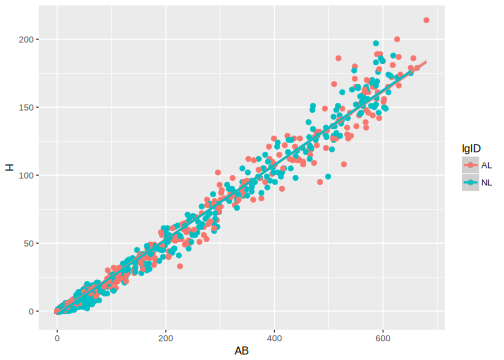
Size: size by (discrete) numeric variable
batting %>%
filter(yearID == "2010") %>%
ggplot(aes(x=AB, y=R, size=HR)) +
geom_point() +
geom_smooth(method=lm)20.2.2 Faceting
The last major component of exploratory analysis called faceting in visualization, corresponds to conditioning in statistical modeling, we’ve seen it as the motivation of grouping when wrangling data.
batting %>%
filter(yearID %in% c("1995", "2000", "2010")) %>%
ggplot(aes(x=AB, y=R, size=HR)) +
facet_grid(lgID~yearID) +
geom_point() +
geom_smooth(method=lm)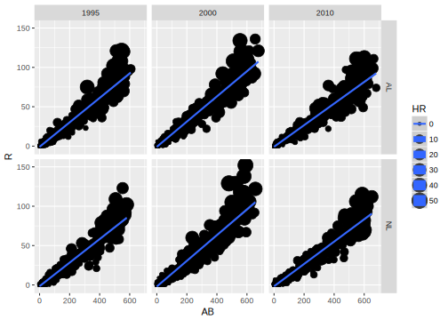